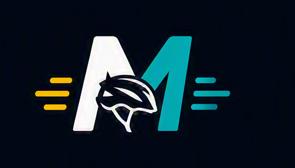

MotionHelmet@motionhelmet · Publicación conceptual
•••
@motionhelmet Señaliza tus giros sin soltar el control. Conoce nuestra propuesta de movilidad inteligente.
#MotionHelmet #CiclismoUrbano #MovilidadInteligente
MotionHelmet detecta inclinaciones configuradas y activa luces direccionales como apoyo visual para la comunicación del ciclista.

Luces para comunicar la intención de giro.
Sensores que reconocen movimientos configurados.
Direccionales ámbar y luz roja central.
Direccionales laterales ámbar y luz central roja inspiradas en la señalización vehicular.
Moverse en bicicleta por la ciudad exige atención constante. Al acercarse a una intersección o prepararse para girar, el ciclista necesita comunicar su intención a conductores y peatones. Sin embargo, las señales manuales pueden ser menos visibles durante la noche, bajo condiciones de tránsito intenso o cuando el entorno demanda mantener un mayor control del manubrio.
MotionHelmet propone una alternativa complementaria: un casco inteligente que reconoce movimientos de inclinación previamente configurados y activa luces direccionales. Así, un gesto sencillo se transforma en una señal luminosa que ayuda a hacer más clara la intención de giro. Su propuesta integra sensores e iluminación en un accesorio pensado para ciclistas urbanos, estudiantes y repartidores.
La novedad está en una interacción intuitiva que evita depender de un control manual adicional. El sistema detecta, interpreta y señaliza. MotionHelmet no reemplaza las señales viales, la atención permanente ni los equipos de protección certificados. Su función es acompañar las prácticas de conducción responsable.
Conoce MotionHelmet y descubre cómo la tecnología puede contribuir a una movilidad urbana más visible, conectada y consciente.
Análisis conceptual del problema, contexto, propuesta, beneficios y limitaciones.
La bicicleta forma parte de la movilidad cotidiana de estudiantes, trabajadores, repartidores y otras personas que se desplazan por la ciudad. Durante estos recorridos, comunicar una intención de giro es importante para la convivencia entre ciclistas, conductores y peatones. Las señales realizadas con los brazos cumplen esa función, pero su visibilidad puede variar según la iluminación, la congestión, la distancia y la atención de quienes circulan alrededor. MotionHelmet surge como una propuesta conceptual de casco inteligente que complementa la señalización mediante luces direccionales activadas por movimientos de inclinación configurados. El proyecto no se presenta como garantía de seguridad ni como sustituto de las normas viales. Su propósito es explorar una interacción práctica entre movimiento, sensores e iluminación aplicada a la movilidad urbana.
Un ciclista necesita mantener el control de la bicicleta, observar el entorno y anticipar las acciones de otros usuarios de la vía. Cuando se aproxima a una intersección debe, además, comunicar hacia dónde se desplazará. En situaciones nocturnas o de tránsito intenso, una señal manual podría no percibirse con claridad. Esta afirmación describe una necesidad considerada por el equipo, pero su frecuencia e impacto deben verificarse mediante observación, entrevistas o pruebas de campo. También se plantea que añadir controles manuales al manubrio podría aumentar las acciones requeridas durante el recorrido. Este supuesto debería evaluarse antes de afirmar que una alternativa por inclinación resulta más cómoda. MotionHelmet parte de estas situaciones para proponer un apoyo visual integrado al casco, sin eliminar la responsabilidad individual de conducir con atención.
La propuesta está dirigida principalmente a ciclistas urbanos, entre ellos estudiantes, repartidores y personas que utilizan la bicicleta como transporte habitual. Estos perfiles recorren vías y horarios distintos, por lo que no se debe asumir que tienen las mismas necesidades. Un repartidor podría realizar trayectos prolongados, mientras que un estudiante podría utilizar la bicicleta solo en determinados horarios. El clima, el tipo de casco, la postura y la infraestructura vial también pueden influir en el uso del producto. Por ello, estos grupos representan un público objetivo inicial y no usuarios ya validados. Para comprender mejor el contexto sería necesario realizar entrevistas, identificar movimientos naturales de la cabeza y analizar qué inclinaciones pueden distinguirse de las acciones normales de observar el tránsito.
MotionHelmet propone incorporar sensores de inclinación y luces direccionales en un casco para bicicleta. Su funcionamiento conceptual se divide en tres momentos. Primero, el sensor detectaría un movimiento definido por el sistema. Después, un componente de control interpretaría si corresponde a una intención de giro. Finalmente, se activaría la luz lateral asociada durante un periodo determinado. Además, una luz roja central representaría frenado o detención, siguiendo un lenguaje visual familiar para conductores. Estas características son propuestas de diseño y no resultados de un prototipo validado. Antes de implementarlas se tendrían que definir los ángulos, la duración del gesto, la cancelación y la forma de evitar activaciones accidentales. La facilidad de uso solo podría comprobarse mediante pruebas con usuarios.
El primer beneficio esperado es aportar una señal luminosa adicional que ayude a comunicar la intención de giro. El segundo es permitir una interacción sin depender de un botón manual adicional, ya que la activación se basaría en movimientos configurados. El tercero es integrar señalización e iluminación en un elemento utilizado por el ciclista. También se espera que la propuesta resulte fácil de comprender: detectar, interpretar y señalizar. Sin embargo, estos beneficios son expectativas y requieren validación. Será necesario comprobar si las luces son visibles a distintas distancias y condiciones, si los gestos se reconocen correctamente y si el usuario comprende cuándo la señal está activada. Una posible mejora sería incorporar una confirmación discreta, siempre que no genere distracción. Cualquier decisión tendría que priorizar la comodidad y una comunicación clara.
El proyecto presenta limitaciones técnicas y de uso que deben reconocerse desde el inicio. Un movimiento normal para observar el entorno podría confundirse con una orden, por lo que el sistema necesitaría mecanismos para reducir activaciones involuntarias. La autonomía de la batería, la resistencia al agua, el peso añadido, la distribución de componentes y el mantenimiento son variables aún no definidas. También debe verificarse que una modificación del casco no afecte su estructura ni certificaciones. MotionHelmet no debe reemplazar las señales exigidas por la normativa aplicable, y las reglas concretas tendrían que consultarse en fuentes oficiales antes de una implementación real. La propuesta requiere pruebas con usuarios y evaluación en entornos controlados antes de considerar su uso en vías públicas. Reconocer estas limitaciones evita atribuir resultados todavía no demostrados.
MotionHelmet combina una necesidad de comunicación vial con una propuesta tecnológica basada en sensores de inclinación y luces direccionales. Su valor potencial se encuentra en transformar un movimiento configurado en una señal visual complementaria, manteniendo una interacción coherente con el ciclismo urbano. No obstante, el proyecto se encuentra en una etapa conceptual. Sus beneficios, comodidad y funcionamiento deben evaluarse mediante investigación con usuarios, prototipos y pruebas controladas. Diferenciar hechos generales, supuestos y características propuestas ayuda a construir una idea responsable y verificable. El siguiente paso consiste en conversar con ciclistas, identificar gestos adecuados y elaborar un prototipo básico que permita medir la precisión de la detección. Conoce MotionHelmet y acompaña el desarrollo de una alternativa orientada a una movilidad más visible, conectada y consciente.
Registra el movimiento configurado.
Reconoce la dirección asociada.
Activa la luz correspondiente.
Conoce novedades y acompaña el desarrollo conceptual del proyecto.

#MotionHelmet #CiclismoUrbano #MovilidadInteligente
Formulario demostrativo para la actividad académica.